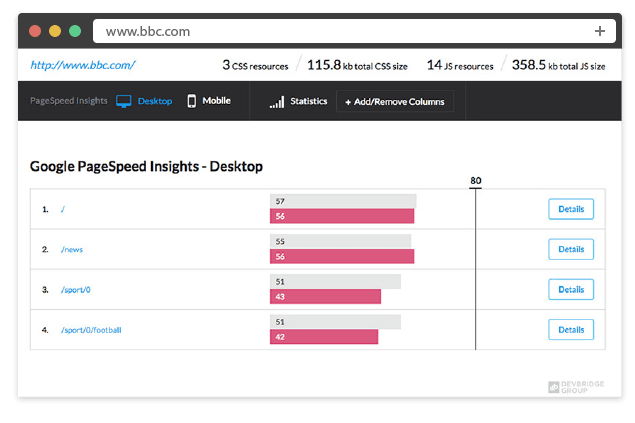

PerfTool Collect various information about your website and displays it in an easy-to-digest manner on the reports page


This is a npm package to display statistics about your web pages, including Google PageSpeed Insights score, resources count, recommendations how to fix performace issues, html errors and many more in one custom web page.
With PrefTool you can:
- Set your own threshold for scores
- See reports from previous tests
- Compare scores from all pages
- Get HTML error reports
Installation
npm install devbridge-perf-tool --save-dev
require('gulp').task('perf-tool', function () {
var options = {
siteURL:'http://www.google.com',
sitePages: ['/', '/voice']
};
return require('devbridge-perf-tool').performance(options);
});
More information about installation process and how to use it on our github page.
View on GitHub